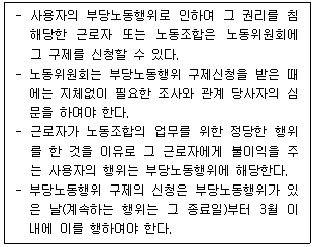
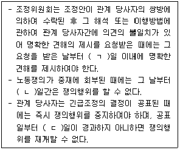
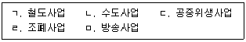
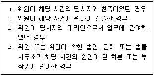

1과목: 노동법2
1. 노동조합 및 노동관계조정법의 연혁에 관한 설명으로 옳지 않은 것은?
2. 헌법상 노동3권에 관한 설명으로 옳지 않은 것은? (다툼이 있으면 판례에 따름)
3. 노동조합 및 노동관계조정법령상 노동조합에 관한 설명으로 옳지 않은 것은?
4. 노동조합 및 노동관계조정법상 노동조합의 설립에 관한 설명으로 옳지 않은 것은?
5. 노동조합 및 노동관계조정법상 노동조합의 관리에 관한 설명으로 옳은 것은?
6. 노동조합 및 노동관계조정법령상 근로시간면제심의위원회에 관한 설명으로 옳은 것은?
7. 노동조합 및 노동관계조정법령상 노동조합의 관리에 관한 설명으로 옳지 않은 것은?
8. 노동조합 및 노동관계조정법령상 노동조합의 해산에 관한 설명으로 옳지 않은 것은?
9. 노동조합 및 노동관계조정법령상 교섭단위 결정 등에 관한 설명으로 옳지 않은 것은?
10. 노동조합 및 노동관계조정법상 단체교섭 및 단체협약에 관한 설명으로 옳지 않은 것은? (다툼이 있으면 판례에 따름)
11. 노동조합 및 노동관계조정법상 부당노동행위에 관한 설명으로 옳은 것은 모두 몇 개인가?

12. 노동조합 및 노동관계조정법상 부당노동행위에 관한 설명으로 옳지 않은 것은? (다툼이 있으면 판례에 따름)
13. 노동조합 및 노동관계조정법상 단체협약 등에 관한 설명으로 옳지 않은 것은?
14. 노동조합 및 노동관계조정법상 단체교섭 및 단체협약에 관한 설명으로 옳지 않은 것은? (다툼이 있으면 판례에 따름)
15. 노동조합 및 노동관계조정법령상 교섭창구 단일화 절차에 관한 설명으로 옳지 않은 것은? (다툼이 있으면 판례에 따름)
16. 노동조합 및 노동관계조정법상 위반 행위에 대하여 벌칙이 적용되지 않는 것은?
17. 노동조합 및 노동관계조정법령상 쟁의행위에 관한 설명으로 옳지 않은 것은?
18. 노동조합 및 노동관계조정법상 쟁의행위에 관한 설명으로 옳지 않은 것은?
19. 노동조합 및 노동관계조정법령상 필수유지업무에 관한 설명으로 옳지 않은 것은?
20. 노동조합 및 노동관계조정법령상 사적 조정ㆍ중재에 관한 설명으로 옳지 않은 것은?
21. 노동조합 및 노동관계조정법상 노동쟁의의 조정 등에 관한 설명이다. ( )에 들어갈 내용으로 옳은 것은?

22. 노동조합 및 노동관계조정법상 노동쟁의의 조정에 관한 설명으로 옳은 것은?
23. 노동조합 및 노동관계조정법령상 중재재정에 관한 설명으로 옳지 않은 것은?
24. 노동조합 및 노동관계조정법상 필수공익사업에 해당하지 않는 사업을 모두 고른 것은?

25. 근로자참여 및 협력증진에 관한 법률상 노사협의회의 운영에 관한 설명으로 옳지 않은 것은?
26. 근로자참여 및 협력증진에 관한 법률상 벌칙 등에 관한 설명으로 옳지 않은 것은?
27. 근로자참여 및 협력증진에 관한 법률상 노사협의회의 협의 사항으로 옳은 것은?
28. 노동위원회법상 노동위원회의 화해의 권고 등에 관한 설명으로 옳지 않은 것은?
29. 노동위원회법상 노동위원회의 공시송달에 관한 설명으로 옳은 것은?
30. 노동위원회법상 노동위원회의 권한 등에 관한 설명으로 옳지 않은 것은?
31. 노동위원회법상 위원이 해당 사건에 관한 직무집행에서 제척(除斥)되는 경우를 모두 고른 것은?

32. 근로자참여 및 협력증진에 관한 법률상 고충처리에 관한 설명으로 옳은 것은?
33. 교원의 노동조합 설립 및 운영 등에 관한 법률의 내용으로 옳지 않은 것은?
34. 교원의 노동조합 설립 및 운영 등에 관한 법령상 근무시간 면제에 관한 설명으로 옳지 않은 것은?
35. 공무원의 노동조합 설립 및 운영 등에 관한 법률의 내용으로 옳은 것은?
36. 공무원의 노동조합 설립 및 운영 등에 관한 법률상 단체교섭 및 단체협약에 관한 설명으로 옳지 않은 것은?
37. 공무원의 노동조합 설립 및 운영 등에 관한 법률상 조정 및 중재에 관한 설명으로 옳은 것은?
38. 노동조합 및 노동관계조정법의 내용 중 공무원의 노동조합 설립 및 운영 등에 관한 법률에 적용되는 것으로 옳은 것은?
39. 교원의 노동조합 설립 및 운영 등에 관한 법령상 단체교섭에 관한 설명으로 옳지 않은 것은?
40. 교원의 노동조합 설립 및 운영 등에 관한 법률상 조정 및 중재에 관한 설명으로 옳은 것은?